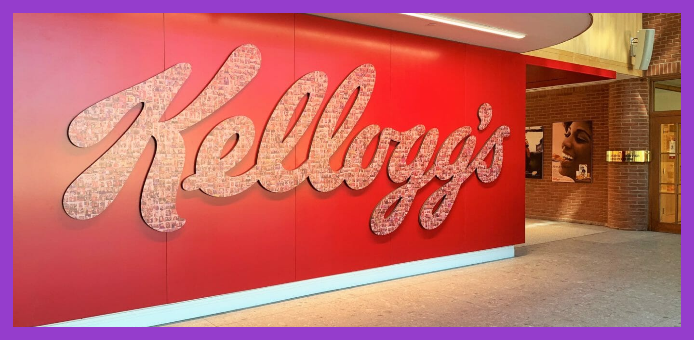

FOUNDER
John Harvey Kellogg and his brother W. K. Kellogg pioneered corn flakes at the Battle Creek Sanitarium in 1894, initially as a wheat-based granola alternative. This accidental discovery led W. K. Kellogg to establish the Battle Creek Toasted Corn Flake Company in 1906, later renamed the Kellogg Company in 1922. Despite early family disputes, W. K.'s business savvy propelled Kellogg's to global success. The company introduced innovations like Pop-Tarts in 1964 and adapted marketing to appeal to wider demographics, driving significant growth in the cereal market through the 1980s.
OUR MISSION
Our mission is to create a just world where everyone thrives, ensuring all have a place at the table through our trusted food brands. Upholding our founder's commitment to well-being, we transcend boundaries with foods that inspire and nourish globally. We pledge to continue our founder's legacy, making a positive impact and leaving the world better than we found it.
OUR MOTTO
"We at Kellogg are committed to continuing our founder's legacy by doing everything we can to leave the world a better place than we found it."